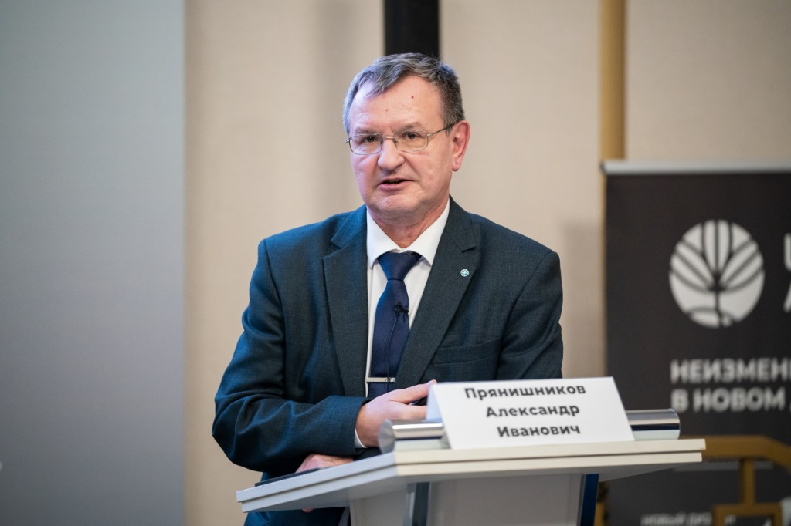

07.04.2026
«Щёлково Агрохим» испытает на Урале новый сорт рапса с устойчивостью к имидазолинонам
Планы по расширению линейки российских семян представлены на выставке «Тюмень-Агро 2026».
Открыть новостьРаботаем с портфелем сортов селекции «Щелково Агрохим» и формируем комплексное B2B-решение: семена, технология выращивания и агрохимическое сопровождение.
Заполните заявку — мы подберем не только сорт, но и технологию выращивания и агрохимическую схему под регион и целевую урожайность.
Технология выращивания
под каждый сорт
Коммерческое предложение формируется по стандартам сопровождения «Щелково Агрохим».
07.04.2026
Планы по расширению линейки российских семян представлены на выставке «Тюмень-Агро 2026».
Открыть новость07.04.2026
На агроконференции в Алтайском ГАУ представлен акцент на защиту яровой пшеницы от фузариоза.
Открыть новость02.04.2026
Гибрид подсолнечника «Кречет» вошел в тройку самых востребованных отечественных гибридов по объёмам высева.
Открыть новость27.03.2026
Интервью о самых урожайных сортах и гибридах на Всероссийском съезде фермерских хозяйств в Казани.
Открыть новостьВ каталоге представлены сорта селекции «Щелково Агрохим». Для каждого сорта наша команда сформирует комплекс: технология выращивания + агрохимическая схема.
Технология оптимальных решений (Щелково Агрохим / betaren.ru)
Этот раздел — база знаний по циклу выращивания озимой пшеницы: практические рекомендации по фазам развития от подготовки почвы до уборки. Нажмите этап, чтобы открыть питание и защиту. Все препараты — из каталога Щелково Агрохим (betaren.ru).
Здесь собраны данные по передовым сортам озимой пшеницы. Информация предоставлена на основе портфеля «Щелково Агрохим» (betaren.ru) — ведущего российского производителя семян и СЗР. График ниже позволяет визуально сравнить потенциальную урожайность флагманских сортов интенсивного типа.
Рекордный потенциал урожайности. Отличная зимостойкость и устойчивость к полеганию.
Высокоинтенсивный сорт для технологичного возделывания.
Адаптивный сорт с элементами интенсификации. Занимает свыше 150 тыс. га.
* Данные по максимальным показателям взяты из материалов отдела селекции ССЦ Щёлково Агрохим (Селекционно-семеноводческий центр)
Ключевые позиции линейки озимой пшеницы созданы и развиваются в рамках селекционной школы «Щелково Агрохим» под руководством ведущего селекционера.

Прянишников Александр Иванович
Директор департамента селекции и семеноводства сельскохозяйственных культур
Доктор сельскохозяйственных наук
Член-корреспондент РАН
Научные интересы Александра Ивановича охватывают генетику и селекцию озимой пшеницы, развитие научных основ адаптивной селекции и ключевых подходов адаптивного растениеводства.
В практической работе он участвует в создании сортов озимой пшеницы, сои и подсолнечника, а также в их широком экологическом испытании в разных почвенно-климатических условиях. Отдельное направление — совершенствование методологических подходов селекции для повышения устойчивости и стабильности урожая.
Ключевые рыночные ориентиры и оперативная аналитика по зерновому рынку: цены, экспортные тренды, погодные риски и практические рекомендации для принятия решений.
Пшеница, CBOT
$220/т
Соя, CBOT
$426/т
Подсолнечник, FOB ЧМ
~$460/т
Кукуруза, CBOT
$177/т
USD/RUB, ЦБ
78.3
Главное • 5 апреля 2026
Россия поставила за рубеж ~14 млн тонн пшеницы за I квартал (оценка по аналогии с 2024). Основные покупатели: Турция, Египет, Бангладеш.
Площадь посевов
1.2 млн га
Урожайность пшеницы
4.8 т/га
NDVI
0.72
Влажность почвы
68% НВ
Сегодня
—
+1 день
—
+2 дня
—
+3 дня
—
+4 дня
—
+5 дней
—
Какая оптимальная норма высева озимой пшеницы?
Ориентир 4,0–5,5 млн всхожих семян/га. Точное значение зависит от зоны, предшественника и сорта.
Когда лучше проводить гербицидную обработку?
Базово — в фазе кущения, с учетом погодных условий и видового состава сорняков.
Какой ROI дает комплексная защита?
По хозяйствам ROI обычно в диапазоне 700–1500%, в зависимости от культуры, сезона и цены реализации.
Прикладные сервисы для расчётов на местах: норма высева, оценка прибыли и стоимость программы защиты.
Загрузите фото поля или опишите симптомы заболевания для автоматического распознавания (Бета-версия).